A tarot deck has 78 cards: 22 Major Arcana for the big themes of a life, and 56 Minor Arcana in four suits, Wands, Cups, Swords and Coins, for its everyday matters.
Choose a card for its upright and shadow meaning and what it foretells. The pictures are from the Rider-Waite-Smith deck (1909). For a personal reading, draw a Celtic Cross; to learn how the deck is built and where it comes from, see about tarot.
Major Arcana · Wands · Cups · Swords · Coins
Major Arcana
The 22 trump cards, numbered 0 to XXI: the archetypes and turning points of a life.
-
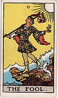
0 · The Fool freedom, faith, inexperience and innocence -
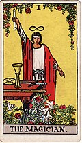
I · The Magician capability, empowerment and activity -
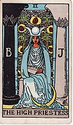
II · The High Priestess intuition, reflection, purity and initiation -
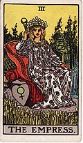
III · The Empress fertility, productivity, ripeness and nurturing -
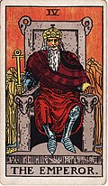
IV · The Emperor authority, regulation, direction and structure -
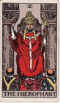
V · The Hierophant guidance, knowledge, revelation and belief -
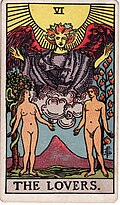
VI · The Lovers love, passion, unity and choice -
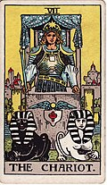
VII · The Chariot advancement, victory, triumph and success -
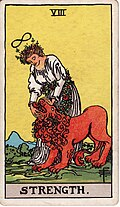
VIII · Strength discipline, boldness, self-discipline, power and vitality -
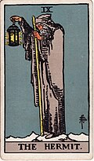
IX · The Hermit solitude, experience, stillness and withdrawal -
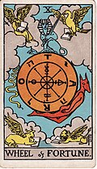
X · Wheel of Fortune luck, randomness, cycles, karma, fate and revolution -
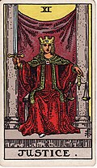
XI · Justice balance, law, fairness and objectivity -
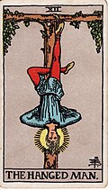
XII · The Hanged Man enlightenment, sacrifice, perspective, suspension and reversals -
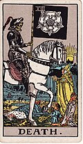
XIII · Death ending, conclusion, transition, passage and departure -
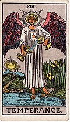
XIV · Temperance blending, synthesis, mediation, combination and harmony -
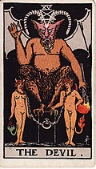
XV · The Devil shadow, materialism, bondage and delusion -
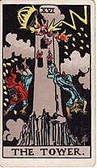
XVI · The Tower demolition, upheaval, deconstruction, disaster and destruction -
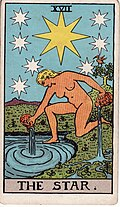
XVII · The Star hope, optimism, openness, certainty, faith, longing and truth -
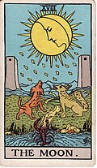
XVIII · The Moon mystery, fantasy, imagination, dreams and uncertainty -
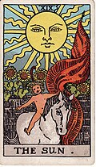
XIX · The Sun joy, brilliance, validation, attention and energy -
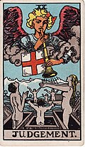
XX · Judgement revival, renewal, resurrection, evaluation and invitation -
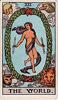
XXI · The World wholeness, integration, totality, completeness and fullness
Wands
The suit of Fire: energy, drive, ambition and creative work.
-
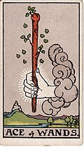
Ace of Wands desire, inspiration, vision, creation and invention -
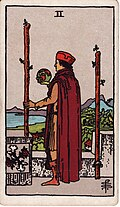
Two of Wands conflict, decision, option and individuality -
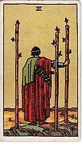
Three of Wands implementation, action and exploration -
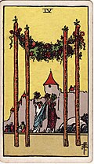
Four of Wands celebration, jubilation, community, teamwork and completion -
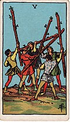
Five of Wands confrontation, disruption, distinction, objection and strife -
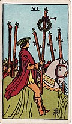
Six of Wands victory, achievement, success and triumph -
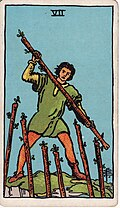
Seven of Wands bravery, resolve and determination -
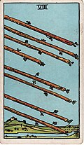
Eight of Wands speed, swiftness, responsiveness and change -
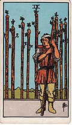
Nine of Wands toughness, persistence, stamina, loyalty and release -
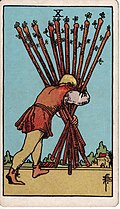
Ten of Wands exhaustion, resistance, burden and oppression -
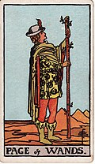
Page of Wands enthusiasm, eagerness, confidence, validation and affirmation -
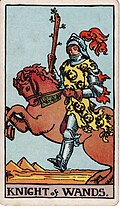
Knight of Wands boldness, bravado, passion, persuasion and advocacy -
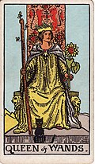
Queen of Wands attention, attraction, unification and collaboration -
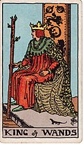
King of Wands creativity, ingenuity, achievement and direction
Cups
The suit of Water: feelings, love, relationships and intuition.
-
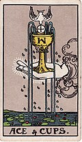
Ace of Cups intuition, spirituality, affection and motivation -
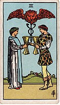
Two of Cups union, attraction, combination and affection -
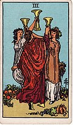
Three of Cups celebration, expression, community and friendliness -
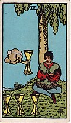
Four of Cups boredom, listlessness, lethargy, stability and ingratitude -
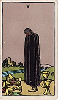
Five of Cups loss, despair, re-evaluation, regret, uncertainty and repentance -
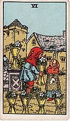
Six of Cups charity, sharing, sacrifice, cooperation and fairness -
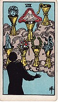
Seven of Cups imagination, dreams, illusions and goals -
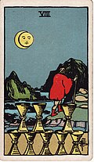
Eight of Cups longing, dissatisfaction, quest, departure and withdrawal -
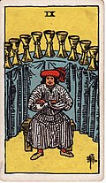
Nine of Cups satisfaction, sensuality, luxury and pleasure -
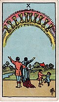
Ten of Cups joy, fulfillment, overwhelming emotion and giddiness -
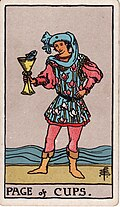
Page of Cups enthusiasm, first impressions, romanticism and superficiality -
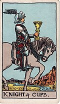
Knight of Cups fervor, zeal, moodiness and illumination -
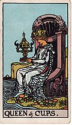
Queen of Cups insightfulness, spirituality, compassion, empathy and instinct -
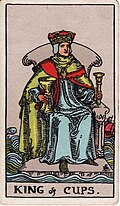
King of Cups wisdom, diplomacy, restraint and composure
Swords
The suit of Air: thought, words, conflict and decisions.
-
 Ace of Swords
logic, objectivity, intellect and choice
Ace of Swords
logic, objectivity, intellect and choice
-
 Two of Swords
denial, debate, impasse and truce
Two of Swords
denial, debate, impasse and truce
-
 Three of Swords
variance, difference, dissatisfaction, heartache and
rejection
Three of Swords
variance, difference, dissatisfaction, heartache and
rejection
-
 Four of Swords
meditation, contemplation, perspective and mindset
Four of Swords
meditation, contemplation, perspective and mindset
-
 Five of Swords
selfishness, hostility, irrationality and
self-preservation
Five of Swords
selfishness, hostility, irrationality and
self-preservation
-
 Six of Swords
adaptation, adjustments, science and travel
Six of Swords
adaptation, adjustments, science and travel
-
 Seven of Swords
dishonesty, presumption, sneakiness and assumptions
Seven of Swords
dishonesty, presumption, sneakiness and assumptions
-
 Eight of Swords
restriction, limitation, confinement and helplessness
Eight of Swords
restriction, limitation, confinement and helplessness
-
 Nine of Swords
remorse, worry, distraught and conclusion
Nine of Swords
remorse, worry, distraught and conclusion
-
 Ten of Swords
exhaustion, ruin, disaster, stamina and obsession
Ten of Swords
exhaustion, ruin, disaster, stamina and obsession
-
 Page of Swords
student, apprentice, scholarship and information
Page of Swords
student, apprentice, scholarship and information
-
 Knight of Swords
bluntness, intelligence, incisiveness and investigation
Knight of Swords
bluntness, intelligence, incisiveness and investigation
-
 Queen of Swords
grace, skill, wit, charm and aptitude
Queen of Swords
grace, skill, wit, charm and aptitude
-
 King of Swords
genius, expertise, decision and verdict
King of Swords
genius, expertise, decision and verdict
Coins
The suit of Earth (also called Pentacles): money, work, the body and the material world.
- Ace of Coins health, wealth, practicality and receiving
- Two of Coins evaluation, decision, budgeting and diagnosis
- Three of Coins expression, production, work and contribution
- Four of Coins protection, conservation, preservation and safety
- Five of Coins poverty, destitution, need and crisis
- Six of Coins charity, fairness, cooperation and sharing
- Seven of Coins assessment, evaluation, re-evaluation and reflection
- Eight of Coins effort, work diligence and skill
- Nine of Coins training, discipline, confidence and enough
- Ten of Coins wealth, abundance, acquisition and greed
- Page of Coins practicality, prosperity, learning, growth and adolescence
- Knight of Coins caution, focus, realism and invention
- Queen of Coins luxury, comfort, resourcefulness, generosity and prosperity
- King of Coins stability, dependability, confidence and intervention